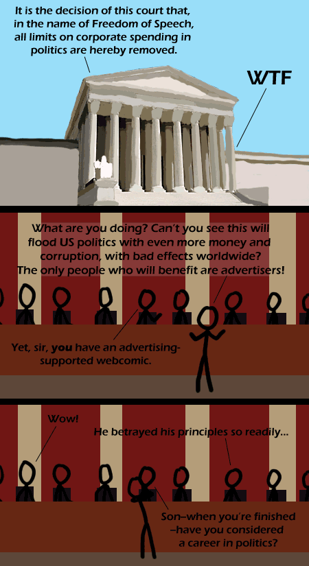

Comic JK 341
When I Feel Like It
⇤
<
?
>
⇥

⇤
<
?
>
⇥
Forum
.
RSS
.
Digg
.
Facebook
.
Reddit
.
Twitter
.
Stumbleupon
Enter your thoughts on number 341 here. Please, no spamming, trolling, or phreaking. And please, please no autocratic censoring your mother. The only thing I'm missing are the same ads over and over on every site. >(Referring to previous hover text, 'AdBlock users: see what you're missing') >>I have never seen ads on this website >>> <3 AdBlock >>>> Quote for truth: <3 AdBlock >>>>>There is an ad RIGHT above this box....... >>>>>>Look at the comment above yours. If you don't understand, google it. >>>>>>>I use AdBlock, but disable it on sites I frequent, such as webcomics. I figure I owe it to them. >>>>>>>>Overlooking that it isn't "AdBlock" - it is "AdBlock PLUS"... PS - I personally use ABP to only block the really egregious adverts, such as those with a file size larger than the rest of the page combined... though the use of ad-networks to directly serve malware is a factor that may make me extend my blocking... >>>>>>>What's this concept of ad you speak of? >>>>>>>>I'm sure I already saw a comic about this. If you use Adblock, you deny the creator of this comic the only income he gets from this comic. Thus, ComicJK will soon be no more, unless you stop using Adblock. Oh noes! >>>>>>>erm... actually, a site that hosts ads normally only gets paid if a visitor clicks on an ad... I can accept that *may* provide sufficient income to pay hosting fees and the like, but it seems many sites display *lots and lots and lots* of ads more from wishful hopes of ad-fuelled riches rather than from any rational calculation... I use ABP universally, because as far as I'm concerned, any site that needs ad-revenue to operate is a useless, time-wasting luxury, and it really wouldn't affect my quality of life if they disappeared. For people who whine "but how will I support myself by being a web comic artist?", all I can say is to get a real job, like most of the rest of us. >>>>>>>erm... if it "wouldn't affect the quality of (your) life" if such sites disappeared... why do you bother to read them in the first place ? <<<<<<<<<<You are a bunch of whiners; may god put some cocaine in your nasal pathways. --the comicjk cocaine troll >>>>>>>>Also, some of us enjoy reading witty webcomics such as Comic JK. Don't bash the creator. Epic alt text (aka title text, hover text) >The alt text of the image is "Supremely Committed". The title text is "Next up in 'treating corporations as people:' denying venture capital is now considered abortion.". I didn't see a hover attribute, but there might have been one in the css. * This is a test of the emergency broadcast system. There is a situation that deserves your full attention. Reports now indicate that dead are rising from their graves. For your and your family's sake - please remain calm. * >That "read are rising from their graves"? I didn't know read _had_ graves. >>maybe it's the "well-read" - resurrection requires literacy... ? >s/read/dead/ wait... there are ads on the interwebs? I'm going to yell 'WTF' randomly in Congress someday and see what happens.